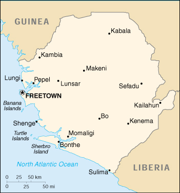

{kind=link}


| Sierra Leone |
|
|  | |
| Introduction |
Background: Since 1991, civil war between the government and the Revolutionary United Front (RUF) has resulted in tens of thousands of deaths and the displacement of more than 2 million people (well over one-third of the population) many of whom are now refugees in neighboring countries. A peace agreement, signed on 7 July 1999, offers hope that the country will be able to rebuild its devastated economy and infrastructure, but previous peace efforts have failed. As of late 1999, up to 6,000 UN peacekeepers were in the process of deploying to bolster the peace accord.
| Geography |
Location: Western Africa, bordering the North Atlantic Ocean, between Guinea and Liberia
Geographic coordinates: 8 30 N, 11 30 W
Map references: Africa
Area:
total:
71,740 sq km
land:
71,620 sq km
water:
120 sq km
Area - comparative: slightly smaller than South Carolina
Land boundaries:
total:
958 km
border countries:
Guinea 652 km, Liberia 306 km
Coastline: 402 km
Maritime claims:
territorial sea:
200 nm
continental shelf:
200-m depth or to the depth of exploitation
Climate: tropical; hot, humid; summer rainy season (May to December); winter dry season (December to April)
Terrain: coastal belt of mangrove swamps, wooded hill country, upland plateau, mountains in east
Elevation extremes:
lowest point:
Atlantic Ocean 0 m
highest point:
Loma Mansa (Bintimani) 1,948 m
Natural resources: diamonds, titanium ore, bauxite, iron ore, gold, chromite
Land use:
arable land:
7%
permanent crops:
1%
permanent pastures:
31%
forests and woodland:
28%
other:
33% (1993 est.)
Irrigated land: 290 sq km (1993 est.)
Natural hazards: dry, sand-laden harmattan winds blow from the Sahara (November to May); sandstorms, dust storms
Environment - current issues: rapid population growth pressuring the environment; overharvesting of timber, expansion of cattle grazing, and slash-and-burn agriculture have resulted in deforestation and soil exhaustion; civil war depleting natural resources; overfishing
Environment - international agreements:
party to:
Biodiversity, Climate Change, Desertification, Endangered Species, Law of the Sea, Marine Life Conservation, Nuclear Test Ban, Wetlands
signed, but not ratified:
Environmental Modification
| People |
Population: 5,232,624 (July 2000 est.)
Age structure:
0-14 years:
44.73% (male 1,148,264; female 1,192,533)
15-64 years:
52.16% (male 1,305,039; female 1,424,076)
65 years and over:
3.11% (male 81,291; female 81,421) (2000 est.)
Population growth rate: 3.67% (2000 est.)
Birth rate: 45.63 births/1,000 population (2000 est.)
Death rate: 19.58 deaths/1,000 population (2000 est.)
Net migration rate:
10.61 migrant(s)/1,000 population (2000 est.)
note:
by the end of 1999 refugees from Sierra Leone are assumed to be returning
Sex ratio:
at birth:
1.03 male(s)/female
under 15 years:
0.96 male(s)/female
15-64 years:
0.92 male(s)/female
65 years and over:
1 male(s)/female
total population:
0.94 male(s)/female (2000 est.)
Infant mortality rate: 148.66 deaths/1,000 live births (2000 est.)
Life expectancy at birth:
total population:
45.25 years
male:
42.37 years
female:
48.21 years (2000 est.)
Total fertility rate: 6.08 children born/woman (2000 est.)
Nationality:
noun:
Sierra Leonean(s)
adjective:
Sierra Leonean
Ethnic groups: 20 native African tribes 90% (Temne 30%, Mende 30%, other 30%), Creole 10% (descendants of freed Jamaican slaves who were settled in the Freetown area in the late-eighteenth century), refugees from Liberia's recent civil war, small numbers of Europeans, Lebanese, Pakistanis, and Indians
Religions: Muslim 60%, indigenous beliefs 30%, Christian 10%
Languages: English (official, regular use limited to literate minority), Mende (principal vernacular in the south), Temne (principal vernacular in the north), Krio (English-based Creole, spoken by the descendants of freed Jamaican slaves who were settled in the Freetown area, a lingua franca and a first language for 10% of the population but understood by 95%)
Literacy:
definition:
age 15 and over can read and write English, Mende, Temne, or Arabic
total population:
31.4%
male:
45.4%
female:
18.2% (1995 est.)
| Government |
Country name:
conventional long form:
Republic of Sierra Leone
conventional short form:
Sierra Leone
Data code: SL
Government type: constitutional democracy
Capital: Freetown
Administrative divisions: 3 provinces and 1 area*; Eastern, Northern, Southern, Western*
Independence: 27 April 1961 (from UK)
National holiday: Republic Day, 27 April (1961)
Constitution: 1 October 1991; subsequently amended several times
Legal system: based on English law and customary laws indigenous to local tribes; has not accepted compulsory ICJ jurisdiction
Suffrage: 18 years of age; universal
Executive branch:
chief of state:
President Ahmad Tejan KABBAH (since 29 March 1996, reinstated 10 March 1998); note - the president is both the chief of state and head of government
head of government:
President Ahmad Tejan KABBAH (since 29 March 1996, reinstated 10 March 1998); note - the president is both the chief of state and head of government
cabinet:
Ministers of State appointed by the president with the approval of the House of Representatives; the cabinet is responsible to the president
elections:
president elected by popular vote for a five-year term; election held 26-27 February and 15 March 1996 (next to be held NA 2001); note - president's tenure of office is limited to two five-year terms
election results:
Ahmad Tejan KABBAH elected president; percent of vote - Ahmad Tejan KABBAH (SLPP) 59.5%, John Karefa-Smart (UNPP) 40.5%
Legislative branch:
unicameral House of Representatives (80 seats - 68 elected by popular vote, 12 filled by paramount chiefs elected in separate elections; members serve five-year terms)
elections:
last held 26-27 February 1996 (next to be held NA 2001)
election results:
percent of vote by party - SLPP 36.1%, UNPP 21.6%, PDP 15.3%, APC 5.7%, NUP 5.3%, DCP 4.8%, other 11.2%; seats by party - SLPP 27, UNPP 17, PDP 12, APC 5, NUP 4, DCP 3; note - first elections since the former House of Representatives was shut down by the military coup of 29 April 1992
Judicial branch: Supreme Court
Political parties and leaders: All People's Congress or APC [Edward Mohammed TURAY, chairman]; Democratic Centre Party or DCP [Adu Aiah KOROMA]; National Democratic Alliance or NDA [Amadu M. B. JALLOH]; National Republican Party or NRP [Sahr Stephen MAMBU]; National Unity Party or NUP [Dr. John KARIMU, chairman]; People's Democratic Party or PDP [Thaimu BANGURA, chairman]; People's Progressive Party or PPP [Abass Chernok BUNDU, chairman]; Revolutionary United Front Party or RUFP [Foday SANKOH, chairman]; Sierra Leone People's Party or SLPP [President Ahmad Tejan KABBAH, chairman]; United National People's Party or UNPP [John KARIFA-SMART in exile, Raymond KAMARA, acting leader]
International organization participation: ACP, AfDB, C, CCC, ECA, ECOWAS, FAO, G-77, IAEA, IBRD, ICAO, ICFTU, ICRM, IDA, IDB, IFAD, IFC, IFRCS, ILO, IMF, IMO, Intelsat (nonsignatory user), Interpol, IOC, ITU, NAM, OAU, OIC, OPCW, UN, UNCTAD, UNESCO, UNIDO, UPU, WCL, WFTU, WHO, WIPO, WMO, WToO, WTrO
Diplomatic representation in the US:
chief of mission:
Ambassador John Ernest LEIGH
chancery:
1701 19th Street NW, Washington, DC 20009
telephone:
[1] (202) 939-9261 through 9263
FAX:
[1] (202) 483-1793
Diplomatic representation from the US:
chief of mission:
Ambassador Joseph MELROSE
embassy:
Corner of Walpole and Siaka Stevens Streets, Freetown
mailing address:
use embassy street address
telephone:
[232] (22) 226481 through 226485
FAX:
[232] (22) 225471
Flag description: three equal horizontal bands of light green (top), white, and light blue
| Economy |
Economy - overview: Sierra Leone has substantial mineral, agricultural, and fishery resources. However, the economic and social infrastructure is not well developed, and serious social disorders continue to hamper economic development. About two-thirds of the working-age population engages in subsistence agriculture. Manufacturing consists mainly of the processing of raw materials and of light manufacturing for the domestic market. Bauxite and rutile mines have been shut down by civil strife. The major source of hard currency is found in the mining of diamonds, the large majority of which are smuggled out of the country. The resurgence of internal warfare in 1999 brought another substantial drop in GDP. The fate of the economy in 2000 depends on the mid-1999 peace accord holding and the rebels reopening territory under their control.
GDP: purchasing power parity - $2.5 billion (1999 est.)
GDP - real growth rate: -10% (1999 est.)
GDP - per capita: purchasing power parity - $500 (1999 est.)
GDP - composition by sector:
agriculture:
52%
industry:
16%
services:
32% (1996)
Population below poverty line: 68% (1989 est.)
Household income or consumption by percentage share:
lowest 10%:
0.5%
highest 10%:
43.6% (1989)
Inflation rate (consumer prices): 30% (1999 est.)
Labor force:
1.369 million (1981 est.)
note:
only about 65,000 wage earners (1985)
Labor force - by occupation: agriculture NA%, industry NA%, services NA%
Unemployment rate: NA%
Budget:
revenues:
$96 million
expenditures:
$150 million, including capital expenditures of $NA (1996 est.)
Industries: mining (diamonds); small-scale manufacturing (beverages, textiles, cigarettes, footwear); petroleum refining
Industrial production growth rate: NA%
Electricity - production: 235 million kWh (1998)
Electricity - production by source:
fossil fuel:
100%
hydro:
0%
nuclear:
0%
other:
0% (1998)
Electricity - consumption: 219 million kWh (1998)
Electricity - exports: 0 kWh (1998)
Electricity - imports: 0 kWh (1998)
Agriculture - products: rice, coffee, cocoa, palm kernels, palm oil, peanuts; poultry, cattle, sheep, pigs; fish
Exports: $41 million (f.o.b., 1998)
Exports - commodities: diamonds, rutile, cocoa, coffee, fish
Exports - partners: Benelux 49%, Spain 10%, US 8%, UK 3% (1997)
Imports: $166 million (f.o.b., 1998)
Imports - commodities: foodstuffs, machinery and equipment, fuels and lubricants, chemicals
Imports - partners: UK 24%, Cote d'Ivoire 14%, Benelux 10%, US 8% (1997)
Debt - external: $1.15 billion (1998)
Economic aid - recipient: $203.7 million (1995)
Currency: 1 leone (Le) = 100 cents
Exchange rates: leones (Le) per US$1 - 2,324.77 (January 2000), 1,804.20 (1999), 1,563.62 (1998), 981.48 (1997), 920.73 (1996), 755.22 (1995)
Fiscal year: 1 July - 30 June
| Communications |
Telephones - main lines in use: 17,000 (1995)
Telephones - mobile cellular: NA
Telephone system:
marginal telephone and telegraph service
domestic:
national microwave radio relay system made unserviceable by military activities
international:
satellite earth station - 1 Intelsat (Atlantic Ocean)
Radio broadcast stations: AM 1, FM 9, shortwave 1 (1999)
Radios: 1.12 million (1997)
Television broadcast stations: 2 (1999)
Televisions: 53,000 (1997)
Internet Service Providers (ISPs): NA
| Transportation |
Railways:
total:
84 km used on a limited basis because the mine at Marampa is closed
narrow gauge:
84 km 1.067-m gauge
Highways:
total:
11,300 km
paved:
904 km
unpaved:
10,396 km (1999 est.)
Waterways: 800 km; 600 km navigable year round
Ports and harbors: Bonthe, Freetown, Pepel
Merchant marine:
total:
1 ship (1,000 GRT or over) totaling 1,105 GRT/1,307 DWT
ships by type:
specialized tanker 1 (1999 est.)
Airports: 10 (1999 est.)
Airports - with paved runways:
total:
1
over 3,047 m:
1 (1999 est.)
Airports - with unpaved runways:
total:
9
914 to 1,523 m:
7
under 914 m:
2 (1999 est.)
Heliports: 1 (1999 est.)
| Military |
Military branches: Army
Military manpower - availability:
males age 15-49:
1,119,540 (2000 est.)
Military manpower - fit for military service:
males age 15-49:
543,124 (2000 est.)
Military expenditures - dollar figure: $46 million (FY96/97)
Military expenditures - percent of GDP: 2% (FY96/97)
| Transnational Issues |
Disputes - international: none